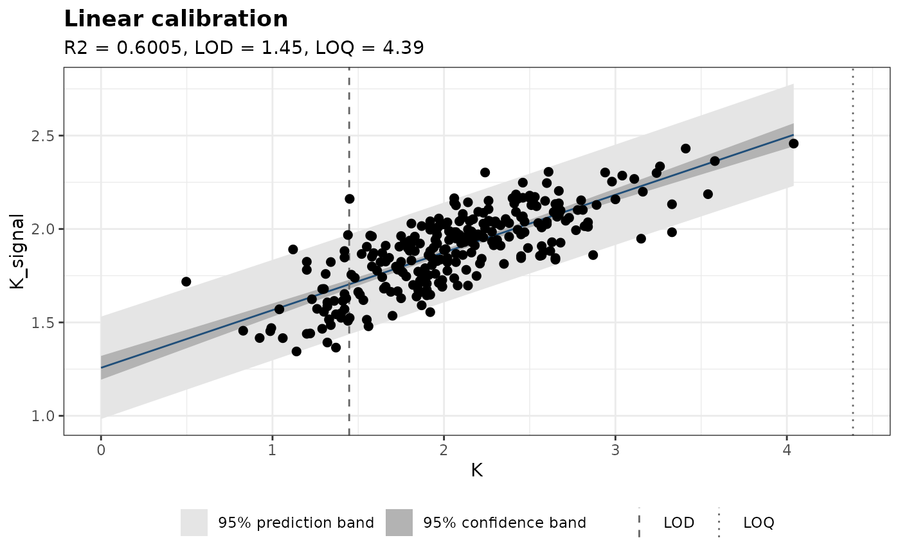
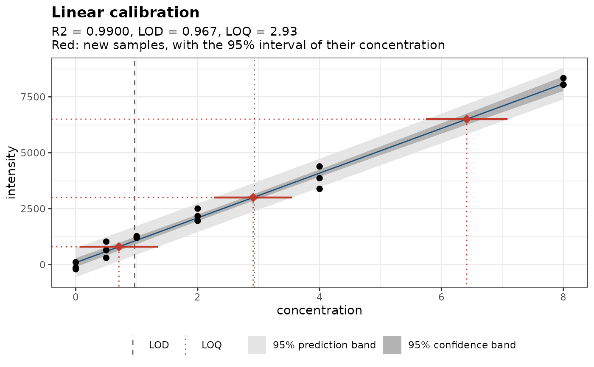

Draws the calibration standards, the fitted curve with its confidence and prediction bands, the limits of detection and quantification, and optionally the concentrations predicted for new samples.
Usage
plot_calibration(
object,
interval = "both",
level = 0.95,
newdata = NULL,
replicates = 1,
title = NULL
)Arguments
- object
A curve fitted with
calibration_curve().- interval
The bands to draw:
"both"(default),"confidence","prediction"or"none".- level
The confidence level of the bands and intervals. Default is 0.95.
- newdata
Optional signals of new samples (a numeric vector, or a data frame with the signal column) to show with their predicted concentrations.
- replicates
The number of replicate measurements averaged in each new signal. Default is 1.
- title
The plot title. By default, the model and the figures of merit.
Details
The confidence band shows where the mean signal lies; the prediction
band, where a single new measurement (or the mean of replicates) is
expected to fall (see calibration_curve()). With newdata, each new
signal is drawn on the curve at its predicted concentration, with guide
lines to the axes and a horizontal bar for the interval of the
concentration from predict().
Examples
set.seed(1)
standards <- data.frame(concentration = rep(c(0, 0.5, 1, 2, 4, 8), each = 3))
standards$intensity <- 50 + 1000 * standards$concentration + rnorm(18, sd = 300)
cal <- calibration_curve(standards, intensity, concentration)
plot_calibration(cal)

plot_calibration(cal, newdata = c(800, 3000, 6500))
